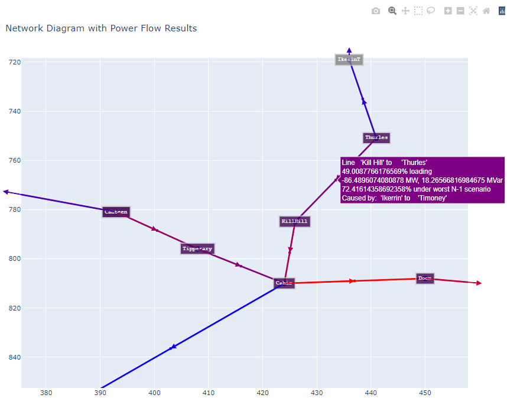

Power Flow and Contingency Outline#
The tool is built and regularly updated using public sources including but not limited to Eirgrid’s Ten Year Transmission Forecast Statement (TYTFS). The model operates in a simple manner for powerflow analysis, utilizing the open source tool PandaPower and other python functionality for data processing. It can easily be updated to reflect a range of scenarios and study years in order to meet the needs of the user. Note: The current model focuses exclusively on the Republic of Ireland’s (ROI) transmission network, excluding Northern Ireland (NI). Expansion is possible upon request.
Outputs can come in many forms, line loading and bus results can be produced by csv files in “Results” folder. Various plots are also provided for a visual representation of the load flow, worst case contingency and test energy storage net impact. Load flow is solved using ACPF newton raphson using DC initialization. Some of the practical applications are senstivity testing with and without network reinforcements, connection method comparisons, and general loadflow injection screening studies.
Determining optimal system wind and solar capacity factors to obtain convergence
In order to build cases for screening, it’s important to first determine what the maximum tollerable wind and solar capacity factors are that will still allow each case to solve and converge properly. The goal being to find the levels of renewable energy dispatch that allow the system to converge for each unique case. Each unique case is meant to represent a slice of time from summer or winter peak demand and meeting it with the maximum amount of wind or solar generation up to the capacity factors input by the user. This is informed by assessing hourly dispatch data from ECP constraint reports, Tomorrow’s Energy Scenarios (TES), and other data from Eirgrid and ESB.
import pandas as pd
import numpy as np
import pandapower as pp
import logging
import pandapower.networks as networks
import pandapower.contingency
import pandapower.control
import pandapower.timeseries
import pandapower.plotting
import lightsim2grid
print(lightsim2grid.__version__)
import plotly.graph_objects as go
from pandapower.pypower.makePTDF import makePTDF
from pandapower.pypower.makeLODF import makeLODF, makeOTDF
from pandapower.pd2ppc import _pd2ppc
from pandapower.pf.makeYbus_numba import makeYbus
from pandapower.pypower.idx_brch import F_BUS, T_BUS, BR_R, BR_X, BR_B, BR_STATUS, SHIFT, TAP, BR_R_ASYM, BR_X_ASYM
from pandapower.toolbox.data_modification import create_continuous_bus_index
import copy
logging.basicConfig(level=logging.INFO)
# Load network data from Model folder
#bus_names_df = pd.read_csv("Model/bus_data.csv")
bus_df = pd.read_csv("Model/bus_data.csv")
line_df = pd.read_csv('Model/line_data.csv')
generator_df = pd.read_csv('Model/generator_data.csv')
transformer_df = pd.read_csv('Model/transformers_data.csv')
reactive_df = pd.read_csv('Model/reactive_data.csv')
load_df_SP = pd.read_csv('Model/load_data_SP2031.csv')
load_df_WP = pd.read_csv('Model/load_data_WP2031.csv')
load_df_SV = pd.read_csv('Model/load_data_SV2031.csv')
# Load network
net = pp.from_pickle("adjusted_network.p")
#Clear network, below is optional if the network needs to be reset
#net.bus.drop(net.bus.index, inplace=True)
#net.line.drop(net.line.index, inplace=True)
#net.load.drop(net.load.index, inplace=True)
#net.gen.drop(net.gen.index, inplace=True)
#net.trafo.drop(net.trafo.index, inplace=True)
# Update functions for transformers, buses, lines, generators, and reactive equipment
def update_load_from_csv(net, load_df):
for index, row in load_df.iterrows():
matched_loads = net.load[(net.load.name == row['name'])]
if not matched_loads.empty:
load_index = matched_loads.index[0]
for col in row.index:
net.load.at[load_index, col] = row[col]
else:
print(f"Warning: load named {row['name']} not found in the network.")
pp.create_load(net, name=row['name'], bus=row['bus'], p_mw=row['p_mw'], q_mvar=row['q_mvar'],
in_service=row['in_service'],scaling=row['scaling'])
def update_trafo_from_csv(net, transformer_df):
for index, row in transformer_df.iterrows():
trafo_indices = net.trafo[net.trafo.index == row['index']].index
if not trafo_indices.empty:
trafo_index = trafo_indices[0]
for col in row.index:
net.trafo.at[trafo_index, col] = row[col]
else:
print(f"Warning: Transformer with index {row['index']} not found in the network.")
pp.create_transformer_from_parameters(net, hv_bus=row['hv_bus'], lv_bus=row['lv_bus'], std_type="your_standard_type",
name=row['name'], sn_mva=row['sn_mva'], vn_hv_kv=row['vn_hv_kv'], vn_lv_kv=row['vn_lv_kv'],
vk_percent=row['vk_percent'], vkr_percent=row['vkr_percent'], pfe_kw=row['pfe_kw'],
i0_percent=row['i0_percent'], shift_degree=row['shift_degree'], tap_side=row['tap_side'],
tap_neutral=row['tap_neutral'], tap_min=row['tap_min'], tap_max=row['tap_max'],
tap_step_percent=row['tap_step_percent'], tap_step_degree=row['tap_step_degree'],
tap_pos=row['tap_pos'], parallel=row['parallel'], in_service=row['in_service'],
max_loading_percent=row['max_loading_percent'],index=row['index'])
def update_bus_from_csv(net, bus_df):
for index, row in bus_df.iterrows():
bus_indices = net.bus[net.bus.index == row['index']].index
if not bus_indices.empty:
bus_index = bus_indices[0]
for col in row.index:
net.bus.at[bus_index, col] = row[col]
else:
pp.create_bus(net, vn_kv=row['vn_kv'], name=row['name'], max_vm_pu=row['max_vm_pu'], min_vm_pu=row['min_vm_pu'],
zone=row['zone'], in_service=row['in_service'], geodata=(row['x1'], row['y1']), index=row['index'])
def update_lines_from_csv(net, line_df, max_i_column='max_i_ka'):
for index, row in line_df.iterrows():
line_indices = net.line[net.line.index == row['line_id']].index
if not line_indices.empty:
line_index = line_indices[0]
for col in row.index:
net.line.at[line_index, col] = row[col]
else:
print(f"Warning: Line with line_id {row['line_id']} not found in the network.")
pp.create_line_from_parameters(net, from_bus=row['from_bus'], to_bus=row['to_bus'], index=row['line_id'],
length_km=row['length_km'], r_ohm_per_km=row['r_ohm_per_km'],
x_ohm_per_km=row['x_ohm_per_km'], c_nf_per_km=row['c_nf_per_km'],
max_i_ka=row[max_i_column], wp_max_i_ka=row['wp_max_i_ka'],name=row['name'], in_service=row['in_service'],
max_loading_percent=row['max_loading_percent'],kV = row['kv_from'])
def update_generators_from_csv(net,gen_df):
# Ensure custom columns exist in net.gen. Add them if needed.
for custom_col in ['type_', 'zone']:
if custom_col not in net.gen.columns:
net.gen[custom_col] = 0 # or set a default value if desired
for index, row in gen_df.iterrows():
matched_generators = net.gen[(net.gen.name == row['name'])]
if not matched_generators.empty:
gen_index = matched_generators.index[0]
for col in row.index:
net.gen.at[gen_index, col] = row[col]
else:
print(f"Warning: Generator named {row['name']} not found in the network.")
pp.create_gen(net, name=row['name'], bus=row['bus'], p_mw=row['p_mw'], vm_pu=row['vm_pu'],
slack=False, max_q_mvar=row['max_q_mvar'], min_q_mvar=row['min_q_mvar'],
min_p_mw=row['min_p_mw'], max_p_mw=row['max_p_mw'], in_service=row['in_service'],
controllable=row['controllable'], max_vm_pu=row['max_vm_pu'], min_vm_pu=row['min_vm_pu'], type_=row['type'],
zone=row['zone'],scaling=1.0)
def update_reactive_from_csv(net, reactive_df):
for index, row in reactive_df.iterrows():
matched_react = net.shunt[(net.shunt.name == row['name'])]
if not matched_react.empty:
react_index = matched_react.index[0]
for col in row.index:
net.shunt.at[react_index, col] = row[col]
else:
print(f"Warning: Reactive equipment named {row['name']} not found in the network.")
pp.create_shunt(net, name=row['name'], bus=row['bus'], p_mw=row['p_mw'], q_mvar=row['q_mvar'],
in_service=row['in_service'])
#Lines below update model if changes have been made such as new generators, lines, busses, loads, etc. . .
update_bus_from_csv(net, bus_df)
update_generators_from_csv(net, generator_df)
update_lines_from_csv(net, line_df)
update_trafo_from_csv(net, transformer_df)
update_reactive_from_csv(net, reactive_df)
update_load_from_csv(net, load_df_SP)
wind_types = [17,18,19,20,21,22]
all_wind_types = [16,17,18,19,20,21,22]
offshore_types = [16]
gas_types = [9]
solar_types = [23]
storage_types = [14]
interconnector_type = [49]
all_re_types = [16,17,18,19,20,21,22,23]
min_conv_units = [" 'Huntstown'", " 'PBEGG6'", " 'AGH_CCGT'", "Knockfinglas"]
total_min_gas_max_mw = net.gen.loc[(net.gen['type'] == 9) & (net.gen['name'].isin(min_conv_units)), 'max_p_mw'].sum()
mask_gas = (net.gen['type'].isin(gas_types)) & (net.gen['in_service'] == True)
all_gas_pw_max = net.gen.loc[mask_gas, 'max_p_mw'].sum()
mask_offshore = (net.gen['type'] == 16) & (net.gen['in_service'] == True)
all_offshore_max_pw_re = net.gen.loc[mask_offshore, 'max_p_mw'].sum()
mask_wind = (net.gen['type'].isin(wind_types)) & (net.gen['in_service'] == True)
all_onshore_max_pw_re = net.gen.loc[mask_wind, 'max_p_mw'].sum()
mask_solar = (net.gen['type'].isin(solar_types)) & (net.gen['in_service'] == True)
all_solar_max_pw_re = net.gen.loc[mask_solar, 'max_p_mw'].sum()
mask_storage = (net.gen['type'].isin(storage_types)) & (net.gen['in_service'] == True)
all_storage_max_pw_re = net.gen.loc[mask_storage, 'max_p_mw'].sum()
mask_interconnector = (net.gen['type'].isin(interconnector_type)) & (net.gen['in_service'] == True)
all_interconnector_max_pw_re = net.gen.loc[mask_interconnector, 'max_p_mw'].sum()
mask_all_re = (net.gen['type'].isin(all_re_types)) & (net.gen['in_service'] == True)
total_re_max_pw = all_solar_max_pw_re + mask_offshore + mask_wind
#Status of generation
print(f"total conv generation at script begin: {all_gas_pw_max}, percentage of total: {(all_gas_pw_max/(net.gen.loc[net.gen['in_service'] == True,'max_p_mw'].sum()))*100}")
print(f"total offshore generation at script begin: {all_offshore_max_pw_re}, percentage of total: {(all_offshore_max_pw_re/(net.gen.loc[net.gen['in_service'] == True,'max_p_mw'].sum()))*100}")
print(f"total onshore generation at script begin: {all_onshore_max_pw_re}, percentage of total: {(all_onshore_max_pw_re/(net.gen.loc[net.gen['in_service'] == True,'max_p_mw'].sum()))*100}")
print(f"total solar generation at script begin: {all_solar_max_pw_re}, percentage of total: {(all_solar_max_pw_re/(net.gen.loc[net.gen['in_service'] == True,'max_p_mw'].sum()))*100}")
print(f"total storage generation at script begin: {all_storage_max_pw_re}, percentage of total: {(all_storage_max_pw_re/(net.gen.loc[net.gen['in_service'] == True,'max_p_mw'].sum()))*100}")
print(f"total interconnector generation at script begin: {all_interconnector_max_pw_re}, percentage of total: {(all_interconnector_max_pw_re/(net.gen.loc[net.gen['in_service'] == True,'max_p_mw'].sum()))*100}")
#Status of load
total_load = net.load.loc[net.load['in_service'] == True,'p_mw'].sum()
print(f"total pw load: {total_load}")
#Save network file to pickle for use
pp.to_pickle(net,"adjusted_network.p")
0.10.3
total conv generation at script begin: 5953.547500000001, percentage of total: 17.76058566483939
total offshore generation at script begin: 3641.2, percentage of total: 10.86240506568784
total onshore generation at script begin: 7803.774001, percentage of total: 23.280169790164084
total solar generation at script begin: 8932.4, percentage of total: 26.647079811257296
total storage generation at script begin: 4689.6, percentage of total: 13.989985388347165
total interconnector generation at script begin: 1700.0, percentage of total: 5.071429367150755
total pw load: 5849.0199999999995
# ─── User inputs ───────────────────────────────────────────────────────────────
maximize_solar = 0.9
maximize_wind = 0.005 # give the “other” technology at least 5%
Bess_CF = -1 # no storage dispatch if negative
tol = 1e-2 # MW tolerance
season = "summer" #choose "summer" or "winter" for ratings and SP or WP demand
overshoot = 0 # XXX margin in MW, attempt to get wind dominant dispatches to converge
# ────────────────────────────────────────────────────────────────────────────────
net = pp.from_pickle("adjusted_network.p")
total_load += overshoot
# --- Build masks---
mask_gas = net.gen['type'].isin(gas_types) & net.gen['in_service']
mask_min_conv = net.gen['name'].isin(min_conv_units)
mask_all_conv = net.gen['type'].isin(gas_types)
mask_storage = (net.gen['type'] == 14) & net.gen['in_service']
mask_intercon = (net.gen['type'] == 49) & net.gen['in_service']
mask_wind = net.gen['type'].isin(all_wind_types) & net.gen['in_service']
mask_offshore = (net.gen['type'] == 16) & net.gen['in_service']
mask_solar = net.gen['type'].isin(solar_types) & net.gen['in_service']
mask_all_re = net.gen['type'].isin(all_re_types) & net.gen['in_service']
# season update
if season == "winter":
print(f"Season updated to winter")
net.line['max_i_ka'] = net.line['wp_max_i_ka']
update_load_from_csv(net, load_df_WP)
total_load = net.load.loc[net.load['in_service'] == True,'p_mw'].sum()
total_load += overshoot
# capacities
solar_cap = net.gen.loc[mask_solar, 'max_p_mw'].sum()
wind_cap = net.gen.loc[mask_wind, 'max_p_mw'].sum()
# ---Dispatch must-runs ---
# disable all gas, then turn on minimum conv units at their min_p_mw
net.gen.loc[mask_all_conv, 'in_service'] = False
net.gen.loc[mask_min_conv, 'in_service'] = True
net.gen.loc[mask_min_conv, 'p_mw'] = net.gen.loc[mask_min_conv, 'min_p_mw']
# storage
net.gen.loc[mask_storage, 'p_mw'] = net.gen.loc[mask_storage, 'max_p_mw'] * Bess_CF
# interconnectors
net.gen.loc[mask_intercon, 'p_mw'] = net.gen.loc[mask_intercon, 'min_p_mw']
#Debug
print(f"Storage total MW: {net.gen.loc[mask_storage, 'p_mw'].sum():.2f}")
# --- Compute remaining gap after must-runs ---
remaining_gap = total_load - net.gen.loc[net.gen['in_service'], 'p_mw'].sum()
print(f"Gap before RE: {remaining_gap:.2f} MW")
# --- Zero-out renewables from any prior run ---
net.gen.loc[mask_solar, 'p_mw'] = 0.0
net.gen.loc[mask_wind, 'p_mw'] = 0.0
def dispatch_gens(remaining_gap,carry_over = 0):
# --- Compute absolute CF caps (MW) ---
cap_s = solar_cap * maximize_solar
cap_w = wind_cap * maximize_wind
#debug
print(f"Existing solar: {net.gen.loc[mask_solar, 'p_mw'].sum()}")
print(f"Existing wind: {net.gen.loc[mask_wind, 'p_mw'].sum()}")
print(f"Remaining gap: {remaining_gap}")
remaining_gap += net.gen.loc[mask_solar, 'p_mw'].sum() + net.gen.loc[mask_wind, 'p_mw'].sum()
print(f"Remaining gap after adding solar and wind: {remaining_gap}")
net.gen.loc[mask_solar, 'p_mw'] = 0.0
net.gen.loc[mask_wind, 'p_mw'] = 0.0
# --- One-shot RE allocation (proportional → pour-over) ---
s_alloc = w_alloc = 0.0
if remaining_gap > tol:
total_cap = cap_s + cap_w
# proportional split
s_alloc = min(cap_s, remaining_gap * cap_s/total_cap)
w_alloc = min(cap_w, remaining_gap * cap_w/total_cap)
leftover = remaining_gap - (s_alloc + w_alloc)
#debug
print(f"Leftover after s and w allocation: {leftover}")
# pour any leftover into the technology that still has headroom
if leftover > tol:
if s_alloc >= cap_s and w_alloc < cap_w:
w_alloc += min(cap_w - w_alloc, leftover)
elif w_alloc >= cap_w and s_alloc < cap_s:
s_alloc += min(cap_s - s_alloc, leftover)
# write back
net.gen.loc[mask_solar, 'p_mw'] = (
(net.gen.loc[mask_solar, 'max_p_mw'] * (s_alloc / solar_cap))
)
net.gen.loc[mask_wind, 'p_mw'] = (
(net.gen.loc[mask_wind, 'max_p_mw'] * (w_alloc / wind_cap))
)
#debug
print(f"Existing solar: {net.gen.loc[mask_solar, 'p_mw'].sum()}")
print(f"Existing wind: {net.gen.loc[mask_wind, 'p_mw'].sum()}")
remaining_gap = total_load - net.gen.loc[net.gen['in_service'], 'p_mw'].sum()
achieved_solar_cf = s_alloc / solar_cap if solar_cap else 0.0
achieved_wind_cf = w_alloc / wind_cap if wind_cap else 0.0
print(f"Solar CF achieved: {(net.gen.loc[mask_solar, 'p_mw'].sum()/net.gen.loc[mask_solar, 'max_p_mw'].sum()):.3f} / {maximize_solar:.3f}")
print(f"Wind CF achieved: {(net.gen.loc[mask_wind, 'p_mw'].sum()/net.gen.loc[mask_wind, 'max_p_mw'].sum()):.3f} / {maximize_wind:.3f}")
print(f"Gap after RE : {remaining_gap:.2f} MW")
# --- Dispatch gas into remaining gap ---
if remaining_gap > tol or leftover > tol:
remaining_gap = max(remaining_gap,leftover)
# Ramp “min_conv” units from their current p_mw up to max_p_mw
headroom = net.gen.loc[mask_min_conv, 'max_p_mw'] - net.gen.loc[mask_min_conv, 'p_mw']
total_head = headroom.sum()
to_dispatch = min(remaining_gap, total_head)
if total_head > 0:
#need to proportionally distribute
#debug
print(f"To dispatch for conventional: {to_dispatch}")
net.gen.loc[mask_min_conv, 'p_mw'] = np.minimum(net.gen.loc[mask_min_conv, 'p_mw']+((net.gen.loc[mask_min_conv, 'max_p_mw']/(net.gen.loc[mask_min_conv, 'max_p_mw'].sum()))*to_dispatch),net.gen.loc[mask_min_conv, 'max_p_mw'])
remaining_gap = ((total_load - net.gen.loc[net.gen['in_service'], 'p_mw'].sum()))+carry_over
print(f"Min gas gens set to max dispatch, new remaining gap: {remaining_gap}")
# If still a gap, turn on all other gas units at their min_p_mw
if remaining_gap > tol:
print(f"remaining gap persists after maxing out min conv gens, activating all gas gens")
net.gen.loc[mask_all_conv, 'in_service'] = True
net.gen.loc[mask_all_conv, 'p_mw'] = net.gen.loc[mask_all_conv, 'min_p_mw']
remaining_gap = (total_load - net.gen.loc[net.gen['in_service'], 'p_mw'].sum()) + carry_over
print(f"remaining gap after all gas turned to min_p_mw: {remaining_gap}")
# If still a gap, turn on all gas units up proportionally
if remaining_gap > tol:
print(f"remaining gap persists after activating all gas gens, adding proportional generation")
headroom = net.gen.loc[mask_all_conv, 'max_p_mw'] - net.gen.loc[mask_all_conv, 'p_mw']
total_head = headroom.sum()
to_dispatch = min(remaining_gap, total_head)
if total_head > 0:
#need to proportionally distribute
net.gen.loc[mask_all_conv, 'p_mw'] = np.minimum(net.gen.loc[mask_all_conv, 'p_mw']+((net.gen.loc[mask_all_conv, 'max_p_mw']/(net.gen.loc[mask_all_conv, 'max_p_mw'].sum()))*to_dispatch),net.gen.loc[mask_all_conv, 'max_p_mw'])
remaining_gap = (total_load - net.gen.loc[net.gen['in_service'], 'p_mw'].sum()) + carry_over
# If overshoot (remaining_gap < 0), pull back on renewables (detailed edits can allow for user to turn off gas gens to avoid this)
if remaining_gap < -tol:
print(f"Overshot remaining_gap adjustment, remaining gap: {remaining_gap} tapering renewables to adjust")
total_re = net.gen.loc[mask_all_re, 'p_mw'].sum()
reduction = max(remaining_gap, -total_re)
net.gen.loc[mask_all_re, 'p_mw'] = np.maximum(net.gen.loc[mask_all_re, 'p_mw']+((net.gen.loc[mask_all_re, 'p_mw']/(net.gen.loc[mask_all_re, 'p_mw'].sum()))*reduction),0)
remaining_gap = (total_load - net.gen.loc[net.gen['in_service'], 'p_mw'].sum()) + carry_over
print(f"Solar CF achieved after reduction: {(net.gen.loc[mask_solar, 'p_mw'].sum()/net.gen.loc[mask_solar, 'max_p_mw'].sum()):.3f} / {maximize_solar:.3f}")
print(f"Wind CF achieved after reduction: {(net.gen.loc[mask_wind, 'p_mw'].sum()/net.gen.loc[mask_wind, 'max_p_mw'].sum()):.3f} / {maximize_wind:.3f}")
return remaining_gap, carry_over
remaining_gap, carry_over = dispatch_gens(remaining_gap)
print(f"Final remaining gap: {remaining_gap:.2f} MW")
# --- Overall check ---
total_gen = net.gen.loc[net.gen['in_service'], 'p_mw'].sum()
print(f"Total load: {total_load:.2f} MW, total generation: {total_gen:.2f} MW")
Storage total MW: -4689.60
Gap before RE: 11388.33 MW
Existing solar: 0.0
Existing wind: 0.0
Remaining gap: 11388.329999999998
Remaining gap after adding solar and wind: 11388.329999999998
Leftover after s and w allocation: 3291.945129994998
Existing solar: 8039.160000000001
Existing wind: 57.224870005
Solar CF achieved: 0.900 / 0.900
Wind CF achieved: 0.005 / 0.005
Gap after RE : 3291.95 MW
To dispatch for conventional: 1125.2475
Min gas gens set to max dispatch, new remaining gap: 2330.238491537196
remaining gap persists after maxing out min conv gens, activating all gas gens
remaining gap after all gas turned to min_p_mw: 2304.0951299949993
remaining gap persists after activating all gas gens, adding proportional generation
Final remaining gap: 0.00 MW
Total load: 5849.02 MW, total generation: 5849.02 MW
# Define power flow attempts as a list of tuples (initialization method, algorithm)
power_flow_attempts = [
#('flat', 'nr', True), # Newton-Raphson with flat start, qlims set to true
#('flat', 'nr', False), # Newton-Raphson with flat start, qlims set to false
('dc', 'nr', True), # Newton-Raphson with DC start, qlims set to true (most likely to solve using this)
#('dc', 'nr', False), # Newton-Raphson with DC start, qlims set to false
]
pf_settings = {
"algorithm": 'nr',
"max_iteration": 100,
"tolerance_mva": 1e-5,
"init": 'dc',
"enforce_q_lims": True,
"calculate_voltage_angles": True,
"logging": False,
"voltage_depend_loads": False,
"v_debug": True
}
slack_tol = 40 # MW tolerance for slack generator output (Turlough hill equivilant of all four gens into 1, 10 MW per gen seen as reasonable)
slack = 1000
def attempt_power_flow(net, attempts=1):
# Below is to display generation vs load balance for ROI
total_load = net.load.p_mw.sum()
total_generation = net.gen.loc[net.gen['in_service'] == True, 'p_mw'].sum()
print(f"Total Load: {total_load} MW, Total Generation: {total_generation} MW")
for init_method, algorithm, q_lims in attempts:
try:
pp.runpp(net, init=init_method, max_iteration=100, calculate_voltage_angles=True,
enforce_q_lims=q_lims, tolerance_mva=5e-3, algorithm=algorithm, logging=False,
voltage_depend_loads=False, v_debug=True)
if net.converged:
print(f"Power flow calculation successful with {init_method} start and {algorithm} algorithm, with q lims set to {q_lims}")
return True
else:
print("Power flow did not converge, checking mismatches...")
except Exception as e:
print(f"Power flow calculation failed for {init_method} start {algorithm}, with q lims set to {q_lims}: {e}")
#Below optional to see diagnostic if powerflow fails to converge
#diagnostic_results = pp.diagnostic(net, report_style='detailed')
#print(diagnostic_results)
return False
def compute_slack(net):
slack_indices = net.gen.index[net.gen.slack == True]
total_slack = sum(net.res_gen.at[idx, "p_mw"] for idx in slack_indices)
return total_slack
while abs(slack) > slack_tol:
if attempt_power_flow(net,power_flow_attempts):
slack = compute_slack(net)
print(f"Slack = {slack:.2f} MW")
gap = slack
if abs(slack) <= slack_tol:
print("Convergence achieved: Slack within target range.")
else:
print(f"Convergence not achieved: Slack: {slack} MW")
remaining_gap = slack
carry_over = slack
remaining_gap,carry_over = dispatch_gens(remaining_gap,carry_over)
else:
print(f"Power flow failed to solve")
#Save network file to pickle for use
pp.to_pickle(net,"adjusted_network.p")
Total Load: 5849.0199999999995 MW, Total Generation: 5849.019999999999 MW
Power flow calculation successful with dc start and nr algorithm, with q lims set to True
Slack = 375.49 MW
Convergence not achieved: Slack: 375.49343893972764 MW
Existing solar: 8039.160000000001
Existing wind: 57.224870005
Remaining gap: 375.49343893972764
Remaining gap after adding solar and wind: 8471.878308944728
Leftover after s and w allocation: 375.49343893972764
Existing solar: 8039.160000000001
Existing wind: 57.224870005
Solar CF achieved: 0.900 / 0.900
Wind CF achieved: 0.005 / 0.005
Gap after RE : 0.00 MW
To dispatch for conventional: 375.49343893972764
Min gas gens set to max dispatch, new remaining gap: 44.814955259153066
remaining gap persists after maxing out min conv gens, activating all gas gens
remaining gap after all gas turned to min_p_mw: 2679.588568934727
remaining gap persists after activating all gas gens, adding proportional generation
Total Load: 5849.0199999999995 MW, Total Generation: 6224.513438939727 MW
Power flow calculation successful with dc start and nr algorithm, with q lims set to True
Slack = -4.67 MW
Convergence achieved: Slack within target range.
import pandapower.plotting # registers the bus_geodata accessor
#Filter 110 kV+ buses with valid geodata for easier plotting
filtered_buses = net.bus[
(net.bus['vn_kv'] >= 110)
& net.bus['geodata'].notna()
& net.bus['geodata'].apply(lambda x: x != (0, 0))
]
bus_ids = filtered_buses.index.tolist()
net_cont = copy.deepcopy(net) # Needed because contingency analysis needs reindexed buses due to out of service elements
# Load the bus names mapping
bus_idx_to_name = dict(zip(net_cont.bus['index'], net_cont.bus['bus_names']))
# Identify all buses that are not in service
inactive_buses = net_cont.bus[net_cont.bus['in_service'] == False].index.tolist()
# Drop all those inactive buses (and associated elements)
pp.drop_buses(net_cont, inactive_buses, drop_elements=True)
# Ensure that bus_geodata only contains buses that are present in the bus table
# if bus_geodata doesn’t exist, create an empty one
if not hasattr(net_cont, "bus_geodata"):
net_cont.bus_geodata = pd.DataFrame(index=net_cont.bus.index)
else:
# otherwise filter down to only existing buses
net_cont.bus_geodata = net_cont.bus_geodata.loc[
net_cont.bus_geodata.index.isin(net_cont.bus.index)
]
net_cont.bus_geodata = net_cont.bus_geodata[net_cont.bus_geodata.index.isin(net_cont.bus.index)]
# Now safely call create_continuous_bus_index
pp.create_continuous_bus_index(net_cont, start=0, store_old_index=False)
# Identify high-voltage buses (>=110 kV)
high_voltage_buses = net_cont.bus[net_cont.bus['vn_kv'] >= 110].index
# Define contingency cases for lines and transformers
high_voltage_long_lines = net_cont.line[
(net_cont.line['from_bus'].isin(high_voltage_buses) | net_cont.line['to_bus'].isin(high_voltage_buses)) &
(net_cont.line['length_km'] >= 1.1)
]
transformer_contingencies = net_cont.trafo[
net_cont.trafo['hv_bus'].isin(high_voltage_buses) | net_cont.trafo['lv_bus'].isin(high_voltage_buses)
]
contingency_cases = {
"line": {"index": high_voltage_long_lines.index.tolist()},
"trafo": {"index": transformer_contingencies.index.tolist()}
}
# Run the contingency analysis with the defined settings
try:
pp.contingency.run_contingency_ls2g(net_cont, contingency_cases, pp.runpp, **pf_settings)
except Exception as e:
print(f"ERROR - during contingency analysis: {e}")
#optional error handling
diagnostic_results = pp.diagnostic(net_cont, report_style='detailed')
print(diagnostic_results)
# Prepare a DataFrame for processing the results
contingency_output = pd.DataFrame()
# Filter the results to include only elements in the contingency cases
res_line_filtered = net_cont.res_line.loc[high_voltage_long_lines.index]
res_trafo_filtered = net_cont.res_trafo.loc[transformer_contingencies.index]
# Ensure the line_data index is properly set
if net_cont.line.index.name != 'line_id':
net_cont.line.set_index('line_id', inplace=True)
# Reset index if necessary for joining
if 'index' not in res_line_filtered.columns:
res_line_filtered.reset_index(inplace=True)
# Join line names with contingency results
res_line_filtered = res_line_filtered.join(net_cont.line['name'], on='index')
# Prepare elements to process
elements_to_process = [("line", res_line_filtered), ("trafo", res_trafo_filtered)]
for element_type, elements in elements_to_process:
# Skip processing if elements DataFrame is empty
if elements.empty:
continue
for idx, row in elements.iterrows():
cause_element = row.get('cause_element', 'Unknown')
cause_index = row.get('cause_index', 'Unknown')
max_loading_percent = row.get('max_loading_percent', 'N/A')
intact_loading_percent = row.get('loading_percent', 'N/A')
element_name = row.get('name', 'Unknown')
# Get the cause element name
if cause_element in net_cont and cause_index in net_cont[cause_element].index:
cause_element_name = net_cont[cause_element].at[cause_index, 'name']
else:
cause_element_name = 'Unknown'
# Append data to the contingency output DataFrame
new_data = {
"Element Type": element_type,
"Element Index": idx,
"Element Name": element_name,
"Intact Loading %": intact_loading_percent,
"Max Loading %": max_loading_percent,
"Cause Element": cause_element,
"Cause Index": cause_index,
"Cause Element Name": cause_element_name
}
# Update: Use pd.concat instead of append
contingency_output = pd.concat([contingency_output, pd.DataFrame([new_data])], ignore_index=True)
if hasattr(net_cont.res_bus, "min_vm_pu"):
# If run_contingency_ls2g stored cause info in res_bus, handle it
pass
else:
# If not, fill them as 'Unknown'
net_cont.res_bus["cause_element"] = "Unknown"
net_cont.res_bus["cause_index"] = "Unknown"
# create a DataFrame with relevant columns
bus_results = net_cont.res_bus.copy()
bus_results["bus_idx"] = bus_results.index
# align nominal voltage
bus_results["vn_kv"] = net_cont.bus["vn_kv"].reindex(bus_results.index)
# keep only buses ≥110 kV
bus_results = bus_results[bus_results["vn_kv"] >= 110]
bus_results["bus_name"] = bus_results["bus_idx"].map(lambda b: bus_idx_to_name.get(b, f"Bus_{b}"))
for idx, row in bus_results.iterrows():
vm_pu = row["vm_pu"]
max_vm_pu = row["max_vm_pu"]
min_vm_pu = row["min_vm_pu"]
bus_name = row["bus_name"]
#Below reflects standard operation in Irish system, voltages must stay within +/-10% and so must the voltage magnitude step after contingency
if not (0.9 <= min_vm_pu or max_vm_pu <= 1.1 or max_vm_pu-vm_pu<=0.1 or vm_pu-min_vm_pu<=0.1):
# If it's outside 0.90-1.10 p.u., record a violation
print("Voltage violation detected, review contingency results")
new_data = {
"Element Type": "bus",
"Element Index": idx,
"Element Name": bus_name,
"Voltage [p.u.]": vm_pu,
"Max Voltage [p.u.]": max_vm_pu,
"Min Voltage [p.u.]": min_vm_pu,
#"Cause Element": cause_element,
#"Cause Index": cause_index,
# We can store if it's Over/Under
"Violation Type": "Under-Voltage" if min_vm_pu < 0.9 else "Over-Voltage"
}
contingency_output = pd.concat([contingency_output, pd.DataFrame([new_data])], ignore_index=True)
# Save contingency results to CSV, optional
contingency_output.to_csv(f"Results/Contingency/contingency_results_filtered_S{maximize_solar}_W{maximize_wind}.csv", index=False)
print(f"Filtered contingency analysis results have been saved to 'Results/Contingency/contingency_results_filtered_14052025.csv'.")
# select only line‐type contingencies, edit or add new code for transformer contingencies
line_cont = contingency_output[contingency_output['Element Type'] == 'line']
if not line_cont.empty:
# find the index of the max/min “Max Loading %”
idx_max = line_cont['Max Loading %'].idxmax()
idx_min = line_cont['Max Loading %'].idxmin()
max_row = line_cont.loc[idx_max]
min_row = line_cont.loc[idx_min]
print(f"Line with HIGHEST max loading: {max_row['Element Name']} "
f"({max_row['Max Loading %']:.1f}%)"
f"Caused by: {max_row['Cause Element Name']}")
print(f"Line with LOWEST max loading: {min_row['Element Name']} "
f"({min_row['Max Loading %']:.1f}%)"
f"Caused by: {min_row['Cause Element Name']}")
else:
print("No line contingencies found in results.")
Filtered contingency analysis results have been saved to 'Results/Contingency/contingency_results_filtered_14052025.csv'.
Line with HIGHEST max loading: 'Derrycarney' to 'Derrinlough' (222.7%)Caused by: 'Portlaoise' to 'Kilcormac'
Line with LOWEST max loading: Seven Hills to Ballygar (0.0%)Caused by: Offshore to 'Knockraha'
'''
#Remove comment block and run when on local machine
from numba import njit, prange
from pandapower.pypower.makeBdc import makeBdc
from pandapower.pypower.makeLODF import makeLODF, makeOTDF
import time
# - - - - - - User defined thresholds - - - - -
OVERLOAD_THRESHOLD = 110 # not in per unit (1.0 means 100% loading)
OTDF_filter = 0.01 # filter out OTDF values that are less than this value or greater than this negative value
net = pp.from_pickle("adjusted_network.p")
# - - - - - - - - - - - - - - --- - - - - - - -
def normalize_line_name(line_name):
return ' '.join(line_name.strip().split())
def preprocess_network(net):
"""
Normalize line/trafo names and ensure consistent bus indexing in pandapower.
"""
if "name_normalized" not in net.line.columns:
net.line["name_normalized"] = net.line["name"].apply(normalize_line_name)
if "name_normalized" not in net.trafo.columns:
net.trafo["name_normalized"] = net.trafo["name"].apply(normalize_line_name)
if "from_bus_orig" not in net.line.columns:
net.line["from_bus_orig"] = net.line["from_bus"]
if "to_bus_orig" not in net.line.columns:
net.line["to_bus_orig"] = net.line["to_bus"]
pp.create_continuous_bus_index(net, start=0, store_old_index=True)
def orient_lines_by_flow(net):
"""
Runs a DC power flow, then re-orients each line if its flow is negative.
Re-runs DC to update flows.
"""
pp.runpp(net, **pf_settings)
for i in net.line.index:
p_from = net.res_line.at[i, "p_from_mw"]
if p_from < 0:
old_from = net.line.at[i, "from_bus"]
old_to = net.line.at[i, "to_bus"]
net.line.at[i, "from_bus"] = old_to
net.line.at[i, "to_bus"] = old_from
pp.runpp(net, **pf_settings)
def map_branch_indices(net, orig_branch_idx):
"""
Map each HV branch in the subnetwork to its original pandapower index.
For lines, return the net.line index; for transformers, return the net.trafo index.
Also returns a list indicating branch type ("line", "trafo", or "unknown").
"""
branch_lookup = net._pd2ppc_lookups["branch"]
line_range = branch_lookup.get("line", (0, 0))
line_start, line_end = line_range
net_line_indices = net.line.index.to_numpy()
trafo_range = branch_lookup.get("trafo", None)
if trafo_range is not None:
trafo_start, trafo_end = trafo_range
net_trafo_indices = net.trafo.index.to_numpy()
else:
trafo_start, trafo_end = (0, 0)
net_trafo_indices = np.array([])
mapped = np.full(len(orig_branch_idx), -1, dtype=int)
mapped_type = ["" for _ in range(len(orig_branch_idx))]
for idx, ppc_idx in enumerate(orig_branch_idx):
if line_start <= ppc_idx < line_end:
mapped[idx] = net_line_indices[ppc_idx - line_start]
mapped_type[idx] = "line"
elif trafo_range is not None and trafo_start <= ppc_idx < trafo_end:
mapped[idx] = net_trafo_indices[ppc_idx - trafo_start]
mapped_type[idx] = "trafo"
else:
mapped[idx] = -1
mapped_type[idx] = "unknown"
return mapped, mapped_type
def compute_base_loading_vectorized(net, branch_array, orig_branch_idx):
"""
Vectorized computation of base loading for each branch.
For lines, use net.line["max_i_ka"]; for transformers, use net.trafo["sn_mva"].
Converts DataFrame indices to positional indices.
"""
mapped_branch_idx, mapped_type = map_branch_indices(net, orig_branch_idx)
mapped_type = np.array(mapped_type)
mapped_branch_idx = np.array(mapped_branch_idx)
n_br = branch_array.shape[0]
base_loading = np.zeros(n_br, dtype=float)
line_positions = {idx: pos for pos, idx in enumerate(net.line.index)}
trafo_positions = {idx: pos for pos, idx in enumerate(net.trafo.index)}
line_mask = (mapped_type == "line") & (mapped_branch_idx != -1)
if line_mask.any():
line_indices = np.array([line_positions[x] for x in mapped_branch_idx[line_mask]])
line_values = net.res_line["loading_percent"].fillna(0.0).to_numpy()
base_loading[line_mask] = line_values[line_indices]
trafo_mask = (mapped_type == "trafo") & (mapped_branch_idx != -1)
if trafo_mask.any():
trafo_indices = np.array([trafo_positions[x] for x in mapped_branch_idx[trafo_mask]])
trafo_values = net.res_trafo["loading_percent"].fillna(0.0).to_numpy()
base_loading[trafo_mask] = (trafo_values[trafo_indices] * 1.25) / (OVERLOAD_THRESHOLD/100) # Transformer allowed up to 125%
return base_loading
@njit(parallel=True)
def clip_and_replace_parallel(matrix, clip_min, clip_max):
m, n = matrix.shape
for i in prange(m):
for j in range(n):
val = matrix[i, j]
if np.isnan(val):
matrix[i, j] = 0.0
elif val < clip_min:
matrix[i, j] = clip_min
elif val > clip_max:
matrix[i, j] = clip_max
return matrix
def reindex_bus_ids(net, bus_array, branch_array):
"""
Re‐maps bus IDs in the ppc arrays to a contiguous 0..(n-1) range,
and returns mappings back to the *original* pandapower bus indices.
"""
if bus_array is None or branch_array is None or len(bus_array) == 0:
return bus_array, branch_array, {}, {}
#Grab the pandapower→ppc lookup, which may be a dict or a 1D np.array
pp_lookup = net._pd2ppc_lookups["bus"]
if isinstance(pp_lookup, dict):
bus2ppc = pp_lookup
elif isinstance(pp_lookup, np.ndarray):
# array[pd_idx] = ppc_idx
bus2ppc = {pd_idx: int(ppc_idx) for pd_idx, ppc_idx in enumerate(pp_lookup)}
else:
raise ValueError(f"Unexpected type for pd2ppc bus lookup: {type(pp_lookup)}")
#Invert it: ppc_idx → pandapower bus_idx
ppc_to_bus = {ppc: bus for bus, ppc in bus2ppc.items()}
#Pull the original ppc‐bus indices out of the first column of bus_array
old_ppc_ids = np.real(bus_array[:, 0]).astype(int)
old_bus_ids = np.array([ppc_to_bus.get(ppc, -1) for ppc in old_ppc_ids])
#Build your new 0..N-1 IDs
n_buses = len(old_bus_ids)
new_ids = np.arange(n_buses)
new_to_old = dict(zip(new_ids, old_bus_ids))
old_to_new = {old: new for new, old in new_to_old.items() if old >= 0}
#Overwrite bus_array’s first column with the new contiguous IDs
bus_array[:, 0] = new_ids
#Now update the branch_array’s from/to to use new IDs as well
from_b = np.real(branch_array[:, F_BUS]).astype(int)
to_b = np.real(branch_array[:, T_BUS]).astype(int)
for i in range(len(branch_array)):
ppc_from = from_b[i]
ppc_to = to_b[i]
old_from = ppc_to_bus.get(ppc_from, -1)
old_to = ppc_to_bus.get(ppc_to, -1)
branch_array[i, F_BUS] = old_to_new.get(old_from, -1)
branch_array[i, T_BUS] = old_to_new.get(old_to, -1)
return bus_array, branch_array, new_to_old, old_to_new
def build_hv_only_ppc(net):
"""
Runs AC power flow, orients lines, and extracts ppc arrays (bus, branch)
for HV buses (vn_kv >= 110) plus any slack buses.
Additionally excludes pandapower lines where length_km < 1.
Further filters to include only "meshed" HV buses.
"""
pp.runpp(net, **pf_settings)
ppc = net._ppc
if "bus" not in ppc or "branch" not in ppc:
print("[Error] Missing ppc bus or branch.")
return None, None, None
bus_array = ppc["bus"].copy()
branch_array = ppc["branch"].copy()
# Identify HV buses based on voltage (>= 110 kV)
hv_buses = net.bus[net.bus["vn_kv"] >= 110].index.tolist()
slack_buses = net.gen[net.gen["slack"] == True].bus.values
for sb in slack_buses:
if sb not in hv_buses:
hv_buses.append(sb)
# Filter to only "meshed" buses.
line_from = net.line["from_bus"]
line_to = net.line["to_bus"]
mask_from = line_from.isin(hv_buses)
mask_to = line_to.isin(hv_buses)
lines_in_hv = net.line[mask_from & mask_to]
line_connections = pd.concat([lines_in_hv["from_bus"], lines_in_hv["to_bus"]])
line_counts = line_connections.value_counts()
if "trafo" in net and not net.trafo.empty:
trafo_counts = net.trafo["hv_bus"].value_counts()
else:
trafo_counts = pd.Series(dtype=float)
connectivity = line_counts.add(trafo_counts, fill_value=0)
meshed_hv_buses = [bus for bus in hv_buses if connectivity.get(bus, 0) >= 2]
hv_buses = meshed_hv_buses
bus_lookup = net._pd2ppc_lookups["bus"]
hv_ppc_idx = [bus_lookup[b] for b in hv_buses if b in bus_lookup]
mask_bus = np.isin(bus_array[:, 0].astype(int), hv_ppc_idx)
bus_array = bus_array[mask_bus, :]
from_b = np.real(branch_array[:, F_BUS]).astype(int)
to_b = np.real(branch_array[:, T_BUS]).astype(int)
mask_hv_br = np.isin(from_b, hv_ppc_idx) & np.isin(to_b, hv_ppc_idx)
line_start, line_end = net._pd2ppc_lookups["branch"]["line"]
line_ppc_indices = range(line_start, line_end)
line_pp_indices = net.line.index.tolist()
ppc_idx_to_line_idx = dict(zip(line_ppc_indices, line_pp_indices))
short_line_mask = (net.line["length_km"] < 1.1)
short_line_idx = set(net.line[short_line_mask].index)
mask_short_line = np.zeros(branch_array.shape[0], dtype=bool)
for ppc_idx in line_ppc_indices:
if ppc_idx in ppc_idx_to_line_idx:
pandapower_line_idx = ppc_idx_to_line_idx[ppc_idx]
if pandapower_line_idx in short_line_idx:
mask_short_line[ppc_idx] = True
mask_br = mask_hv_br & (~mask_short_line)
orig_branch_idx = np.where(mask_br)[0]
branch_array = branch_array[mask_br, :]
return bus_array, branch_array, orig_branch_idx
def compute_PTDF_LODF_OTDF(net):
"""
Builds an HV-only ppc subnetwork, reindexes bus IDs, then computes PTDF, LODF, and OTDF.
Returns (H, L, OTDF, bus_array, branch_array, new_to_old, orig_branch_idx, old_to_new).
"""
bus_array, branch_array, orig_branch_idx = build_hv_only_ppc(net)
if bus_array is None or branch_array is None or len(bus_array) == 0 or len(branch_array) == 0:
return None, None, None, None, None, None, None, None
bus_array, branch_array, new_to_old, old_to_new = reindex_bus_ids(net,bus_array, branch_array)
Bbus, Bf, _, _, _ = makeBdc(bus_array, branch_array)
Bbus = Bbus.tocsc()
Bf = Bf.tocsc()
reg_factor = 1e-4
Bbus_dense = Bbus.toarray() + reg_factor * np.eye(Bbus.shape[0])
try:
cond_num = np.linalg.cond(Bbus_dense)
if cond_num < 1e12:
invBbus = np.linalg.solve(Bbus_dense, np.eye(Bbus_dense.shape[0]))
else:
print("High condition number; using pseudoinverse.")
invBbus = np.linalg.pinv(Bbus_dense, rcond=1e-6)
except LinAlgError as e:
print(f"B matrix inversion error: {e}")
invBbus = np.linalg.pinv(Bbus_dense, rcond=1e-6)
PTDF_mat = Bf.dot(invBbus)
H = np.real(PTDF_mat)
H = clip_and_replace_parallel(H, -1, 1)
L = makeLODF(branch_array, H)
L = np.real(L)
L = np.nan_to_num(L, nan=0.0, posinf=1e6, neginf=-1e6)
n_br = H.shape[0]
outage_branches = np.arange(n_br)
OTDF_raw = makeOTDF(H, L, outage_branches)
OTDF_raw = np.real(OTDF_raw)
OTDF_raw = np.nan_to_num(OTDF_raw, nan=0.0, posinf=1e6, neginf=-1e6)
OTDF = clip_and_replace_parallel(OTDF_raw, -1e6, 1e6)
return H, L, OTDF, bus_array, branch_array, new_to_old, orig_branch_idx, old_to_new
batch_contingency = {}
preprocess_network(net)
orient_lines_by_flow(net)
# Build debug dictionary for circuit info.
circuit_info = {}
for line_idx in net.line.index:
ln_name = net.line.at[line_idx, "name"]
fb_orig = net.line.at[line_idx, "from_bus_orig"]
tb_orig = net.line.at[line_idx, "to_bus_orig"]
circuit_info[line_idx] = f"'{ln_name.strip()}'"
H, L, OTDF, topo_bus_array, topo_branch_array, new_to_old, orig_branch_idx, old_to_new = compute_PTDF_LODF_OTDF(net)
n_br, n_bus = H.shape
sample_new_to_old = new_to_old
# Compute injection-dependent base loadings.
base_loading = compute_base_loading_vectorized(net, topo_branch_array, orig_branch_idx)
# Recalculate loading matrix with updated injections.
loading_matrix = base_loading[:, None] + L * base_loading[None, :]
loading_matrix = np.real(loading_matrix)
# Map branches.
mapped_branch_idx, mapped_type = map_branch_indices(net, orig_branch_idx)
# Recompute max loading values.
max_loading_values = loading_matrix.max(axis=1)
max_loading_indices = loading_matrix.argmax(axis=1)
line_idx_set = set(net_cont.res_line.index)
trafo_idx_set = set(net_cont.res_trafo.index)
# Build per-file contingency data.
cont_max = np.zeros(n_br)
for j in range(n_br):
net_branch_idx = mapped_branch_idx[j]
branch_type = mapped_type[j]
if branch_type == "line" and net_branch_idx != -1:
branch_name = net.line.at[net_branch_idx, "name"]
intact_loading_pct = net.res_line.at[net_branch_idx, "loading_percent"]
max_ia_loading = net.line.at[net_branch_idx, "max_i_ka"]
if net_branch_idx in line_idx_set:
i_star = net_cont.res_line.at[net_branch_idx, "cause_index"]
max_loading_fraction = net_cont.res_line.at[net_branch_idx, "max_loading_percent"]
cont_max[j] = net_cont.res_line.at[net_branch_idx, "max_loading_percent"]
else:
i_star = -1
max_loading_fraction = intact_loading_pct
cont_max[j] = intact_loading_pct
elif branch_type == "trafo" and net_branch_idx != -1:
branch_name = net.trafo.at[net_branch_idx, "name"]
intact_loading_pct = net.res_trafo.at[net_branch_idx, "loading_percent"]
max_ia_loading = net.trafo.at[net_branch_idx, "sn_mva"]
if net_branch_idx in trafo_idx_set:
i_star = net_cont.res_trafo.at[net_branch_idx, "cause_index"]
max_loading_fraction = net_cont.res_trafo.at[net_branch_idx, "max_loading_percent"]
cont_max[j] = net_cont.res_trafo.at[net_branch_idx, "max_loading_percent"]
else:
i_star = -1
max_loading_fraction = intact_loading_pct
cont_max[j] = intact_loading_pct
else:
branch_name = "Unknown"
intact_loading_pct = 0.0
max_ia_loading = 0.0
i_star = max_loading_indices[j]
cont_max[j] = 0.0
outage_name = "Unknown"
if i_star < n_br:
o_net_branch_idx = mapped_branch_idx[i_star]
o_branch_type = mapped_type[i_star]
if o_net_branch_idx != -1:
if o_branch_type == "line":
outage_name = net.line.at[o_net_branch_idx, "name"]
elif o_branch_type == "trafo":
outage_name = net.trafo.at[o_net_branch_idx, "name"]
batch_contingency.setdefault(branch_name, []).append(
(intact_loading_pct, max_loading_fraction, outage_name)
)
# --- Optimized Aggregation Loop for OTDF Contributions ---
#threshold_idx = np.where(max_loading_values >= OVERLOAD_THRESHOLD)[0]
# now pick only those branches whose worst‐case loading ≥ OVERLOAD_THRESHOLD
threshold_idx = np.where(cont_max >= OVERLOAD_THRESHOLD)[0]
contrib_records = [] # list to accumulate tuples of (orig_bus_id, contribution, circuit_debug)
p = net.res_bus["p_mw"].to_numpy()
q = net.res_bus["q_mvar"].to_numpy()
bus_injection = np.sqrt(p**2 + q**2)
for j in threshold_idx:
net_branch_idx = mapped_branch_idx[j]
branch_type = mapped_type[j]
if net_branch_idx >= 0:
if branch_type == "line":
circuit_debug = circuit_info.get(net_branch_idx, "UnknownCircuit")
circuit_rating = net.line.at[net_branch_idx, 'max_i_ka']*net.line.at[net_branch_idx, 'kv_from']*1.732
scaling_factor = net_cont.res_line.at[net_branch_idx, "max_loading_percent"]
i_star = net_cont.res_line.at[net_branch_idx, "cause_index"]
elif branch_type == "trafo":
circuit_debug = f"Transformer: {net.trafo.at[net_branch_idx, 'name']}"
circuit_rating = net.trafo.at[net_branch_idx, 'sn_mva']
scaling_factor = net_cont.res_trafo.at[net_branch_idx, "max_loading_percent"]
i_star = net_cont.res_trafo.at[net_branch_idx, "cause_index"]
else:
circuit_debug = "UnknownCircuit"
else:
circuit_debug = "UnknownCircuit"
i_star_x = max_loading_indices[j]
row_idx = i_star_x * n_br + j
Xj_unscaled = np.real(OTDF[row_idx, :])
#scaling_factor = max_loading_values[j]
mva_loading_over = ((scaling_factor/100) * circuit_rating) - circuit_rating
#Xj = Xj_unscaled * scaling_factor
nz = np.where(np.abs(Xj_unscaled) >= OTDF_filter)[0]
# Accumulate contributions for all buses at once
for b_idx in nz:
orig_bus_id = new_to_old[b_idx]
sc = Xj_unscaled[b_idx] * scaling_factor
mva_reduction = Xj_unscaled[b_idx] * mva_loading_over
inj = bus_injection[orig_bus_id]
pct_of_injection = (mva_reduction / inj)*100 if inj != 0 else (mva_reduction / 1)*100 #assumes buses with no injection inject at least 1 MVA
bus_name = net.bus['bus_names'].at[orig_bus_id]
contrib_records.append((orig_bus_id,bus_name, sc, scaling_factor, circuit_debug,pct_of_injection))
# Convert the records to a DataFrame for efficient grouping.
df_contrib = pd.DataFrame(contrib_records, columns=["Bus_ID","Bus_Name", "Scaled Contribution","Cont_Loading","Circuit_Debug","Percent Reduction"])
# ─── use single contributions DataFrame (df_contrib) ─────────────────────────
df = df_contrib.rename(columns={'Scaled Contribution':'scaled_OTDF_Contribution'})
# ─── compute the five summary stats, user can change as needed────────────────────
statss = (
df.groupby(['Bus_ID','Bus_Name'], as_index=False)['scaled_OTDF_Contribution']
.agg(
Cum_sOTDF = 'sum',
Avg_sOTDF = 'mean',
Med_sOTDF = 'median',
Max_sOTDF = 'max',
Min_sOTDF = 'min'
)
)
# ─── find the Circuit_Debug at the max/min contribution ─────────────────────────
idxmax = df.groupby(['Bus_ID','Bus_Name'])['scaled_OTDF_Contribution'].idxmax()
idxmin = df.groupby(['Bus_ID','Bus_Name'])['scaled_OTDF_Contribution'].idxmin()
circ_max = (
df.loc[idxmax, ['Bus_ID','Bus_Name','Circuit_Debug','scaled_OTDF_Contribution',"Cont_Loading",'Percent Reduction']]
.rename(columns={
'Circuit_Debug':'Circuit_Involved_max',
'scaled_OTDF_Contribution':'Scaled_OTDF_Contribution_max',
'Percent Reduction': 'Percent Reduction_max'
})
)
circ_min = (
df.loc[idxmin, ['Bus_ID','Bus_Name','Circuit_Debug','scaled_OTDF_Contribution',"Cont_Loading",'Percent Reduction']]
.rename(columns={
'Circuit_Debug':'Circuit_Involved_min',
'scaled_OTDF_Contribution':'Scaled_OTDF_Contribution_min',
'Percent Reduction': 'Percent Reduction_min'
})
)
# ─── stitch together the final table ────────────────────────────────────────────
df_agg_final = (
statss
.merge(circ_max, on=['Bus_ID','Bus_Name'], how='left')
.merge(circ_min, on=['Bus_ID','Bus_Name'], how='left')
)
# ─── write out or return ───────────────────────────────────────────────────────
df_agg_final.to_csv(f"Results/global_agg_final_S{maximize_solar}_W{maximize_wind}.csv", index=False)
print(f"[Success] Final OTDF aggregator saved")
# Top 5 buses by maximum scaled OTDF contribution
top5 = df_agg_final.nlargest(5, 'Max_sOTDF')
print("=== Top 5 buses by Max_sOTDF ===")
print(top5[['Bus_ID','Bus_Name','Max_sOTDF','Circuit_Involved_max']])
# Bottom 5 buses by maximum scaled OTDF contribution
bot5 = df_agg_final.nsmallest(5, 'Max_sOTDF')
print("\n=== Bottom 5 buses by Max_sOTDF ===")
print(bot5[['Bus_ID','Bus_Name','Max_sOTDF','Circuit_Involved_max']])
# Top 5 buses by maximum scaled OTDF contribution
top5 = df_agg_final.nlargest(5, 'Cum_sOTDF')
print("=== Top 5 buses by Cum_sOTDF ===")
print(top5[['Bus_ID','Bus_Name','Cum_sOTDF','Circuit_Involved_max']])
# Bottom 5 buses by maximum scaled OTDF contribution
bot5 = df_agg_final.nsmallest(5, 'Cum_sOTDF')
print("\n=== Bottom 5 buses by Cum_sOTDF ===")
print(bot5[['Bus_ID','Bus_Name','Cum_sOTDF','Circuit_Involved_max']])
df_agg_final.to_csv(f"Results/df_agg_final_S{maximize_solar}_W{maximize_wind}.csv", index=False)
'''
'\n#Remove comment block and run when on local machine\nfrom numba import njit, prange\nfrom pandapower.pypower.makeBdc import makeBdc\nfrom pandapower.pypower.makeLODF import makeLODF, makeOTDF\nimport time\n# - - - - - - User defined thresholds - - - - - \nOVERLOAD_THRESHOLD = 110 # not in per unit (1.0 means 100% loading)\nOTDF_filter = 0.01 # filter out OTDF values that are less than this value or greater than this negative value\nnet = pp.from_pickle("adjusted_network.p")\n# - - - - - - - - - - - - - - --- - - - - - - - \ndef normalize_line_name(line_name):\n return \' \'.join(line_name.strip().split())\n\ndef preprocess_network(net):\n """\n Normalize line/trafo names and ensure consistent bus indexing in pandapower.\n """\n if "name_normalized" not in net.line.columns:\n net.line["name_normalized"] = net.line["name"].apply(normalize_line_name)\n if "name_normalized" not in net.trafo.columns:\n net.trafo["name_normalized"] = net.trafo["name"].apply(normalize_line_name)\n if "from_bus_orig" not in net.line.columns:\n net.line["from_bus_orig"] = net.line["from_bus"]\n if "to_bus_orig" not in net.line.columns:\n net.line["to_bus_orig"] = net.line["to_bus"]\n pp.create_continuous_bus_index(net, start=0, store_old_index=True)\n\ndef orient_lines_by_flow(net):\n """\n Runs a DC power flow, then re-orients each line if its flow is negative.\n Re-runs DC to update flows.\n """\n pp.runpp(net, **pf_settings)\n for i in net.line.index:\n p_from = net.res_line.at[i, "p_from_mw"]\n if p_from < 0:\n old_from = net.line.at[i, "from_bus"]\n old_to = net.line.at[i, "to_bus"]\n net.line.at[i, "from_bus"] = old_to\n net.line.at[i, "to_bus"] = old_from\n pp.runpp(net, **pf_settings)\n\ndef map_branch_indices(net, orig_branch_idx):\n """\n Map each HV branch in the subnetwork to its original pandapower index.\n For lines, return the net.line index; for transformers, return the net.trafo index.\n Also returns a list indicating branch type ("line", "trafo", or "unknown").\n """\n branch_lookup = net._pd2ppc_lookups["branch"]\n line_range = branch_lookup.get("line", (0, 0))\n line_start, line_end = line_range\n net_line_indices = net.line.index.to_numpy()\n \n trafo_range = branch_lookup.get("trafo", None)\n if trafo_range is not None:\n trafo_start, trafo_end = trafo_range\n net_trafo_indices = net.trafo.index.to_numpy()\n else:\n trafo_start, trafo_end = (0, 0)\n net_trafo_indices = np.array([])\n \n mapped = np.full(len(orig_branch_idx), -1, dtype=int)\n mapped_type = ["" for _ in range(len(orig_branch_idx))]\n for idx, ppc_idx in enumerate(orig_branch_idx):\n if line_start <= ppc_idx < line_end:\n mapped[idx] = net_line_indices[ppc_idx - line_start]\n mapped_type[idx] = "line"\n elif trafo_range is not None and trafo_start <= ppc_idx < trafo_end:\n mapped[idx] = net_trafo_indices[ppc_idx - trafo_start]\n mapped_type[idx] = "trafo"\n else:\n mapped[idx] = -1\n mapped_type[idx] = "unknown"\n return mapped, mapped_type\n\ndef compute_base_loading_vectorized(net, branch_array, orig_branch_idx):\n """\n Vectorized computation of base loading for each branch.\n For lines, use net.line["max_i_ka"]; for transformers, use net.trafo["sn_mva"].\n Converts DataFrame indices to positional indices.\n """\n mapped_branch_idx, mapped_type = map_branch_indices(net, orig_branch_idx)\n mapped_type = np.array(mapped_type)\n mapped_branch_idx = np.array(mapped_branch_idx)\n n_br = branch_array.shape[0]\n base_loading = np.zeros(n_br, dtype=float)\n \n line_positions = {idx: pos for pos, idx in enumerate(net.line.index)}\n trafo_positions = {idx: pos for pos, idx in enumerate(net.trafo.index)}\n \n line_mask = (mapped_type == "line") & (mapped_branch_idx != -1)\n if line_mask.any():\n line_indices = np.array([line_positions[x] for x in mapped_branch_idx[line_mask]])\n line_values = net.res_line["loading_percent"].fillna(0.0).to_numpy()\n base_loading[line_mask] = line_values[line_indices]\n \n trafo_mask = (mapped_type == "trafo") & (mapped_branch_idx != -1)\n if trafo_mask.any():\n trafo_indices = np.array([trafo_positions[x] for x in mapped_branch_idx[trafo_mask]])\n trafo_values = net.res_trafo["loading_percent"].fillna(0.0).to_numpy()\n base_loading[trafo_mask] = (trafo_values[trafo_indices] * 1.25) / (OVERLOAD_THRESHOLD/100) # Transformer allowed up to 125%\n \n return base_loading\n\n@njit(parallel=True)\ndef clip_and_replace_parallel(matrix, clip_min, clip_max):\n m, n = matrix.shape\n for i in prange(m):\n for j in range(n):\n val = matrix[i, j]\n if np.isnan(val):\n matrix[i, j] = 0.0\n elif val < clip_min:\n matrix[i, j] = clip_min\n elif val > clip_max:\n matrix[i, j] = clip_max\n return matrix\n\ndef reindex_bus_ids(net, bus_array, branch_array):\n """\n Re‐maps bus IDs in the ppc arrays to a contiguous 0..(n-1) range,\n and returns mappings back to the *original* pandapower bus indices.\n """\n\n if bus_array is None or branch_array is None or len(bus_array) == 0:\n return bus_array, branch_array, {}, {}\n\n #Grab the pandapower→ppc lookup, which may be a dict or a 1D np.array\n pp_lookup = net._pd2ppc_lookups["bus"]\n if isinstance(pp_lookup, dict):\n bus2ppc = pp_lookup\n elif isinstance(pp_lookup, np.ndarray):\n # array[pd_idx] = ppc_idx\n bus2ppc = {pd_idx: int(ppc_idx) for pd_idx, ppc_idx in enumerate(pp_lookup)}\n else:\n raise ValueError(f"Unexpected type for pd2ppc bus lookup: {type(pp_lookup)}")\n\n #Invert it: ppc_idx → pandapower bus_idx\n ppc_to_bus = {ppc: bus for bus, ppc in bus2ppc.items()}\n\n #Pull the original ppc‐bus indices out of the first column of bus_array\n old_ppc_ids = np.real(bus_array[:, 0]).astype(int)\n old_bus_ids = np.array([ppc_to_bus.get(ppc, -1) for ppc in old_ppc_ids])\n\n #Build your new 0..N-1 IDs\n n_buses = len(old_bus_ids)\n new_ids = np.arange(n_buses)\n new_to_old = dict(zip(new_ids, old_bus_ids))\n old_to_new = {old: new for new, old in new_to_old.items() if old >= 0}\n\n #Overwrite bus_array’s first column with the new contiguous IDs\n bus_array[:, 0] = new_ids\n\n #Now update the branch_array’s from/to to use new IDs as well\n from_b = np.real(branch_array[:, F_BUS]).astype(int)\n to_b = np.real(branch_array[:, T_BUS]).astype(int)\n for i in range(len(branch_array)):\n ppc_from = from_b[i]\n ppc_to = to_b[i]\n old_from = ppc_to_bus.get(ppc_from, -1)\n old_to = ppc_to_bus.get(ppc_to, -1)\n branch_array[i, F_BUS] = old_to_new.get(old_from, -1)\n branch_array[i, T_BUS] = old_to_new.get(old_to, -1)\n\n return bus_array, branch_array, new_to_old, old_to_new\n\n\ndef build_hv_only_ppc(net):\n """\n Runs AC power flow, orients lines, and extracts ppc arrays (bus, branch)\n for HV buses (vn_kv >= 110) plus any slack buses.\n Additionally excludes pandapower lines where length_km < 1.\n Further filters to include only "meshed" HV buses.\n """\n pp.runpp(net, **pf_settings)\n \n ppc = net._ppc\n if "bus" not in ppc or "branch" not in ppc:\n print("[Error] Missing ppc bus or branch.")\n return None, None, None\n\n bus_array = ppc["bus"].copy()\n branch_array = ppc["branch"].copy()\n\n # Identify HV buses based on voltage (>= 110 kV)\n hv_buses = net.bus[net.bus["vn_kv"] >= 110].index.tolist()\n slack_buses = net.gen[net.gen["slack"] == True].bus.values\n for sb in slack_buses:\n if sb not in hv_buses:\n hv_buses.append(sb)\n\n # Filter to only "meshed" buses.\n line_from = net.line["from_bus"]\n line_to = net.line["to_bus"]\n mask_from = line_from.isin(hv_buses)\n mask_to = line_to.isin(hv_buses)\n lines_in_hv = net.line[mask_from & mask_to]\n line_connections = pd.concat([lines_in_hv["from_bus"], lines_in_hv["to_bus"]])\n line_counts = line_connections.value_counts()\n\n if "trafo" in net and not net.trafo.empty:\n trafo_counts = net.trafo["hv_bus"].value_counts()\n else:\n trafo_counts = pd.Series(dtype=float)\n\n connectivity = line_counts.add(trafo_counts, fill_value=0)\n meshed_hv_buses = [bus for bus in hv_buses if connectivity.get(bus, 0) >= 2]\n hv_buses = meshed_hv_buses\n\n bus_lookup = net._pd2ppc_lookups["bus"]\n hv_ppc_idx = [bus_lookup[b] for b in hv_buses if b in bus_lookup]\n\n mask_bus = np.isin(bus_array[:, 0].astype(int), hv_ppc_idx)\n bus_array = bus_array[mask_bus, :]\n\n from_b = np.real(branch_array[:, F_BUS]).astype(int)\n to_b = np.real(branch_array[:, T_BUS]).astype(int)\n mask_hv_br = np.isin(from_b, hv_ppc_idx) & np.isin(to_b, hv_ppc_idx)\n\n line_start, line_end = net._pd2ppc_lookups["branch"]["line"]\n line_ppc_indices = range(line_start, line_end)\n line_pp_indices = net.line.index.tolist()\n ppc_idx_to_line_idx = dict(zip(line_ppc_indices, line_pp_indices))\n short_line_mask = (net.line["length_km"] < 1.1)\n short_line_idx = set(net.line[short_line_mask].index)\n mask_short_line = np.zeros(branch_array.shape[0], dtype=bool)\n for ppc_idx in line_ppc_indices:\n if ppc_idx in ppc_idx_to_line_idx:\n pandapower_line_idx = ppc_idx_to_line_idx[ppc_idx]\n if pandapower_line_idx in short_line_idx:\n mask_short_line[ppc_idx] = True\n\n mask_br = mask_hv_br & (~mask_short_line)\n orig_branch_idx = np.where(mask_br)[0]\n branch_array = branch_array[mask_br, :]\n\n return bus_array, branch_array, orig_branch_idx\n\ndef compute_PTDF_LODF_OTDF(net):\n """\n Builds an HV-only ppc subnetwork, reindexes bus IDs, then computes PTDF, LODF, and OTDF.\n Returns (H, L, OTDF, bus_array, branch_array, new_to_old, orig_branch_idx, old_to_new).\n """\n bus_array, branch_array, orig_branch_idx = build_hv_only_ppc(net)\n if bus_array is None or branch_array is None or len(bus_array) == 0 or len(branch_array) == 0:\n return None, None, None, None, None, None, None, None\n\n bus_array, branch_array, new_to_old, old_to_new = reindex_bus_ids(net,bus_array, branch_array)\n \n Bbus, Bf, _, _, _ = makeBdc(bus_array, branch_array)\n Bbus = Bbus.tocsc()\n Bf = Bf.tocsc()\n\n reg_factor = 1e-4\n Bbus_dense = Bbus.toarray() + reg_factor * np.eye(Bbus.shape[0])\n try:\n cond_num = np.linalg.cond(Bbus_dense)\n if cond_num < 1e12:\n invBbus = np.linalg.solve(Bbus_dense, np.eye(Bbus_dense.shape[0]))\n else:\n print("High condition number; using pseudoinverse.")\n invBbus = np.linalg.pinv(Bbus_dense, rcond=1e-6)\n except LinAlgError as e:\n print(f"B matrix inversion error: {e}")\n invBbus = np.linalg.pinv(Bbus_dense, rcond=1e-6)\n \n PTDF_mat = Bf.dot(invBbus)\n H = np.real(PTDF_mat)\n H = clip_and_replace_parallel(H, -1, 1)\n \n L = makeLODF(branch_array, H)\n L = np.real(L)\n L = np.nan_to_num(L, nan=0.0, posinf=1e6, neginf=-1e6)\n \n n_br = H.shape[0]\n outage_branches = np.arange(n_br)\n OTDF_raw = makeOTDF(H, L, outage_branches)\n OTDF_raw = np.real(OTDF_raw)\n OTDF_raw = np.nan_to_num(OTDF_raw, nan=0.0, posinf=1e6, neginf=-1e6)\n OTDF = clip_and_replace_parallel(OTDF_raw, -1e6, 1e6)\n \n return H, L, OTDF, bus_array, branch_array, new_to_old, orig_branch_idx, old_to_new\n\nbatch_contingency = {}\npreprocess_network(net)\norient_lines_by_flow(net)\n\n# Build debug dictionary for circuit info.\ncircuit_info = {}\nfor line_idx in net.line.index:\n ln_name = net.line.at[line_idx, "name"]\n fb_orig = net.line.at[line_idx, "from_bus_orig"]\n tb_orig = net.line.at[line_idx, "to_bus_orig"]\n circuit_info[line_idx] = f"\'{ln_name.strip()}\'"\nH, L, OTDF, topo_bus_array, topo_branch_array, new_to_old, orig_branch_idx, old_to_new = compute_PTDF_LODF_OTDF(net)\nn_br, n_bus = H.shape\n\nsample_new_to_old = new_to_old\n\n# Compute injection-dependent base loadings.\nbase_loading = compute_base_loading_vectorized(net, topo_branch_array, orig_branch_idx)\n\n# Recalculate loading matrix with updated injections.\nloading_matrix = base_loading[:, None] + L * base_loading[None, :]\nloading_matrix = np.real(loading_matrix)\n\n# Map branches.\nmapped_branch_idx, mapped_type = map_branch_indices(net, orig_branch_idx)\n\n# Recompute max loading values.\nmax_loading_values = loading_matrix.max(axis=1)\nmax_loading_indices = loading_matrix.argmax(axis=1)\n\nline_idx_set = set(net_cont.res_line.index)\ntrafo_idx_set = set(net_cont.res_trafo.index)\n\n# Build per-file contingency data.\ncont_max = np.zeros(n_br)\nfor j in range(n_br):\n net_branch_idx = mapped_branch_idx[j]\n branch_type = mapped_type[j]\n if branch_type == "line" and net_branch_idx != -1:\n branch_name = net.line.at[net_branch_idx, "name"]\n intact_loading_pct = net.res_line.at[net_branch_idx, "loading_percent"]\n max_ia_loading = net.line.at[net_branch_idx, "max_i_ka"]\n if net_branch_idx in line_idx_set:\n i_star = net_cont.res_line.at[net_branch_idx, "cause_index"]\n max_loading_fraction = net_cont.res_line.at[net_branch_idx, "max_loading_percent"]\n cont_max[j] = net_cont.res_line.at[net_branch_idx, "max_loading_percent"]\n else:\n i_star = -1\n max_loading_fraction = intact_loading_pct\n cont_max[j] = intact_loading_pct\n elif branch_type == "trafo" and net_branch_idx != -1:\n branch_name = net.trafo.at[net_branch_idx, "name"]\n intact_loading_pct = net.res_trafo.at[net_branch_idx, "loading_percent"]\n max_ia_loading = net.trafo.at[net_branch_idx, "sn_mva"]\n if net_branch_idx in trafo_idx_set:\n i_star = net_cont.res_trafo.at[net_branch_idx, "cause_index"]\n max_loading_fraction = net_cont.res_trafo.at[net_branch_idx, "max_loading_percent"]\n cont_max[j] = net_cont.res_trafo.at[net_branch_idx, "max_loading_percent"]\n else:\n i_star = -1\n max_loading_fraction = intact_loading_pct\n cont_max[j] = intact_loading_pct\n else:\n branch_name = "Unknown"\n intact_loading_pct = 0.0\n max_ia_loading = 0.0\n i_star = max_loading_indices[j]\n cont_max[j] = 0.0\n outage_name = "Unknown"\n if i_star < n_br:\n o_net_branch_idx = mapped_branch_idx[i_star]\n o_branch_type = mapped_type[i_star]\n if o_net_branch_idx != -1:\n if o_branch_type == "line":\n outage_name = net.line.at[o_net_branch_idx, "name"]\n elif o_branch_type == "trafo":\n outage_name = net.trafo.at[o_net_branch_idx, "name"]\n batch_contingency.setdefault(branch_name, []).append(\n (intact_loading_pct, max_loading_fraction, outage_name)\n )\n\n# --- Optimized Aggregation Loop for OTDF Contributions ---\n#threshold_idx = np.where(max_loading_values >= OVERLOAD_THRESHOLD)[0]\n# now pick only those branches whose worst‐case loading ≥ OVERLOAD_THRESHOLD\nthreshold_idx = np.where(cont_max >= OVERLOAD_THRESHOLD)[0]\ncontrib_records = [] # list to accumulate tuples of (orig_bus_id, contribution, circuit_debug)\np = net.res_bus["p_mw"].to_numpy()\nq = net.res_bus["q_mvar"].to_numpy()\nbus_injection = np.sqrt(p**2 + q**2)\n\nfor j in threshold_idx:\n net_branch_idx = mapped_branch_idx[j]\n branch_type = mapped_type[j]\n if net_branch_idx >= 0:\n if branch_type == "line":\n circuit_debug = circuit_info.get(net_branch_idx, "UnknownCircuit")\n circuit_rating = net.line.at[net_branch_idx, \'max_i_ka\']*net.line.at[net_branch_idx, \'kv_from\']*1.732\n scaling_factor = net_cont.res_line.at[net_branch_idx, "max_loading_percent"]\n i_star = net_cont.res_line.at[net_branch_idx, "cause_index"]\n elif branch_type == "trafo":\n circuit_debug = f"Transformer: {net.trafo.at[net_branch_idx, \'name\']}"\n circuit_rating = net.trafo.at[net_branch_idx, \'sn_mva\']\n scaling_factor = net_cont.res_trafo.at[net_branch_idx, "max_loading_percent"]\n i_star = net_cont.res_trafo.at[net_branch_idx, "cause_index"]\n else:\n circuit_debug = "UnknownCircuit"\n else:\n circuit_debug = "UnknownCircuit"\n\n i_star_x = max_loading_indices[j]\n row_idx = i_star_x * n_br + j\n Xj_unscaled = np.real(OTDF[row_idx, :])\n #scaling_factor = max_loading_values[j]\n mva_loading_over = ((scaling_factor/100) * circuit_rating) - circuit_rating\n #Xj = Xj_unscaled * scaling_factor\n\n nz = np.where(np.abs(Xj_unscaled) >= OTDF_filter)[0]\n\n # Accumulate contributions for all buses at once\n for b_idx in nz:\n orig_bus_id = new_to_old[b_idx]\n sc = Xj_unscaled[b_idx] * scaling_factor\n mva_reduction = Xj_unscaled[b_idx] * mva_loading_over\n inj = bus_injection[orig_bus_id]\n pct_of_injection = (mva_reduction / inj)*100 if inj != 0 else (mva_reduction / 1)*100 #assumes buses with no injection inject at least 1 MVA\n bus_name = net.bus[\'bus_names\'].at[orig_bus_id]\n contrib_records.append((orig_bus_id,bus_name, sc, scaling_factor, circuit_debug,pct_of_injection))\n\n# Convert the records to a DataFrame for efficient grouping.\ndf_contrib = pd.DataFrame(contrib_records, columns=["Bus_ID","Bus_Name", "Scaled Contribution","Cont_Loading","Circuit_Debug","Percent Reduction"])\n\n# ─── use single contributions DataFrame (df_contrib) ─────────────────────────\ndf = df_contrib.rename(columns={\'Scaled Contribution\':\'scaled_OTDF_Contribution\'})\n\n# ─── compute the five summary stats, user can change as needed────────────────────\nstatss = (\n df.groupby([\'Bus_ID\',\'Bus_Name\'], as_index=False)[\'scaled_OTDF_Contribution\']\n .agg(\n Cum_sOTDF = \'sum\',\n Avg_sOTDF = \'mean\',\n Med_sOTDF = \'median\',\n Max_sOTDF = \'max\',\n Min_sOTDF = \'min\'\n )\n)\n\n# ─── find the Circuit_Debug at the max/min contribution ─────────────────────────\nidxmax = df.groupby([\'Bus_ID\',\'Bus_Name\'])[\'scaled_OTDF_Contribution\'].idxmax()\nidxmin = df.groupby([\'Bus_ID\',\'Bus_Name\'])[\'scaled_OTDF_Contribution\'].idxmin()\n\ncirc_max = (\n df.loc[idxmax, [\'Bus_ID\',\'Bus_Name\',\'Circuit_Debug\',\'scaled_OTDF_Contribution\',"Cont_Loading",\'Percent Reduction\']]\n .rename(columns={\n \'Circuit_Debug\':\'Circuit_Involved_max\',\n \'scaled_OTDF_Contribution\':\'Scaled_OTDF_Contribution_max\',\n \'Percent Reduction\': \'Percent Reduction_max\'\n })\n)\ncirc_min = (\n df.loc[idxmin, [\'Bus_ID\',\'Bus_Name\',\'Circuit_Debug\',\'scaled_OTDF_Contribution\',"Cont_Loading",\'Percent Reduction\']]\n .rename(columns={\n \'Circuit_Debug\':\'Circuit_Involved_min\',\n \'scaled_OTDF_Contribution\':\'Scaled_OTDF_Contribution_min\',\n \'Percent Reduction\': \'Percent Reduction_min\'\n })\n)\n\n# ─── stitch together the final table ────────────────────────────────────────────\ndf_agg_final = (\n statss\n .merge(circ_max, on=[\'Bus_ID\',\'Bus_Name\'], how=\'left\')\n .merge(circ_min, on=[\'Bus_ID\',\'Bus_Name\'], how=\'left\')\n)\n\n# ─── write out or return ───────────────────────────────────────────────────────\ndf_agg_final.to_csv(f"Results/global_agg_final_S{maximize_solar}_W{maximize_wind}.csv", index=False)\nprint(f"[Success] Final OTDF aggregator saved")\n\n# Top 5 buses by maximum scaled OTDF contribution\ntop5 = df_agg_final.nlargest(5, \'Max_sOTDF\')\nprint("=== Top 5 buses by Max_sOTDF ===")\nprint(top5[[\'Bus_ID\',\'Bus_Name\',\'Max_sOTDF\',\'Circuit_Involved_max\']])\n\n# Bottom 5 buses by maximum scaled OTDF contribution\nbot5 = df_agg_final.nsmallest(5, \'Max_sOTDF\')\nprint("\n=== Bottom 5 buses by Max_sOTDF ===")\nprint(bot5[[\'Bus_ID\',\'Bus_Name\',\'Max_sOTDF\',\'Circuit_Involved_max\']])\n\n# Top 5 buses by maximum scaled OTDF contribution\ntop5 = df_agg_final.nlargest(5, \'Cum_sOTDF\')\nprint("=== Top 5 buses by Cum_sOTDF ===")\nprint(top5[[\'Bus_ID\',\'Bus_Name\',\'Cum_sOTDF\',\'Circuit_Involved_max\']])\n\n# Bottom 5 buses by maximum scaled OTDF contribution\nbot5 = df_agg_final.nsmallest(5, \'Cum_sOTDF\')\nprint("\n=== Bottom 5 buses by Cum_sOTDF ===")\nprint(bot5[[\'Bus_ID\',\'Bus_Name\',\'Cum_sOTDF\',\'Circuit_Involved_max\']])\ndf_agg_final.to_csv(f"Results/df_agg_final_S{maximize_solar}_W{maximize_wind}.csv", index=False)\n'
import plotly.graph_objects as go
import plotly.io as pio
from IPython.display import HTML, display
net = pp.from_pickle("adjusted_network.p")
df_agg_final = pd.read_csv(f"Results/df_agg_final_S{maximize_solar}_W{maximize_wind}.csv")
contingency_output = pd.read_csv(f"Results/Contingency/contingency_results_filtered_S{maximize_solar}_W{maximize_wind}.csv")
def plot_network(results, bus_ids, cont_relevant_results):
fig = go.Figure()
# Prepare a color map for power flows
def get_line_color(loading_percent):
return np.interp(loading_percent, [0, 100], [0, 1])
# Prepare a color map for node LODF
def get_node_color(lodf_pct):
return np.interp(lodf_pct, [0, 100], [0, 1])
# Handle coordinates for buses, bus_names, and annotations
adjusted_coords = {row['index']: (row['x1'], row['y1'], row['bus_names']) for i, row in net.bus.iterrows() if pd.notna(row['x1']) and pd.notna(row['y1']) and row['x1'] not in (0, '') and row['y1'] not in (0, '')}
# Cache annotations for adding them in one go later
annotations = []
traces = []
# Handle bus plotting
for bus_id, (x, y, bus_name) in adjusted_coords.items():
stats = df_agg_final[df_agg_final["Bus_Name"] == bus_name]
if not stats.empty:
cum = stats["Cum_sOTDF"].iat[0]
max_s = stats["Max_sOTDF"].iat[0]
circ_max = stats["Circuit_Involved_max"].iat[0]
min_s = stats["Min_sOTDF"].iat[0]
circ_min = stats["Circuit_Involved_min"].iat[0]
else:
cum = max_s = circ_max = min_s = circ_min = "N/A"
if isinstance(cum, (int, float, np.floating)):
nc = get_node_color(cum)
node_color = f'rgba({255*nc:.0f}, 0, {255*(1-nc):.0f}, 1)'
else:
node_color = 'rgba(128,128,128,1)'
# Build hover‐text
hover_text = (
f"<b>Bus {bus_name} (ID {bus_id})</b><br>"
f"Cum_sOTDF: {cum}<br>"
f"Max_sOTDF: {max_s} (Circuit: {circ_max})<br>"
f"Min_sOTDF: {min_s} (Circuit: {circ_min})"
)
# Add it as a marker trace
traces.append(go.Scatter(
x=[x], y=[y],
text=[hover_text],
hoverinfo="text",
mode="markers",
marker=dict(size=12, color="blue"),
name=f"Bus {bus_id}"
))
# Always annotate the bus name
annotations.append(dict(
x=x, y=y, text=bus_name,
showarrow=False,
font=dict(size=10, color="#ffffff"),
bgcolor=node_color,opacity=0.8
))
#Filter out zero or NaN loading
results = results[ results['loading_percent'].ne(0)
& results['loading_percent'].notna() ]
# Handle lines plotting
for _, row in results.iterrows():
loading_percent = row['loading_percent']
# Skip plotting lines if the loading_percent is 0
if loading_percent == 0 or pd.isna(loading_percent):
continue
from_coords = adjusted_coords.get(net.bus.loc[row['from_bus'],'old_index'])
to_coords = adjusted_coords.get(net.bus.loc[row['to_bus'],'old_index'])
if from_coords and to_coords:
loading_percent = row['loading_percent']
line_color = f'rgba({255 * get_line_color(loading_percent)}, 0, {255 * (1 - get_line_color(loading_percent))}, 1)'
traces.append(go.Scatter(x=[from_coords[0], to_coords[0]], y=[from_coords[1], to_coords[1]],
mode='lines', line=dict(color=line_color, width=3),
hoverinfo='none'))
mid_x, mid_y = (from_coords[0] + to_coords[0]) / 2, (from_coords[1] + to_coords[1]) / 2
# Check if there's relevant contingency data
contingency_info = cont_relevant_results[cont_relevant_results['Element Name'] == row['name']]
if not contingency_info.empty:
contingency_relevant_pct = contingency_info['Max Loading %'].values[0]
cause_element_name = contingency_info['Cause Element Name'].values[0]
else:
contingency_relevant_pct = "N/A"
cause_element_name = "No data"
# Add text to display on hover only
text_line = (f"Line {row['name']}<br>{loading_percent}% loading<br>"
f"{contingency_relevant_pct}% under worst N-1 scenario<br>"
f"Caused by: {cause_element_name}")
traces.append(go.Scatter(x=[mid_x], y=[mid_y], text=[text_line], hoverinfo='text', mode='markers',
marker=dict(size=5, color=line_color)))
# Add arrow annotation for power flow direction if needed
arrow_x, arrow_y, ax_x, ax_y = (to_coords[0], to_coords[1], from_coords[0], from_coords[1]) if row['p_from_mw'] >= 0 else (from_coords[0], from_coords[1], to_coords[0], to_coords[1])
annotations.append(dict(x=mid_x, y=mid_y, ax=ax_x, ay=ax_y, xref="x", yref="y", axref="x", ayref="y", showarrow=True, arrowhead=2, arrowsize=1, arrowwidth=2, arrowcolor=line_color))
# Add traces and annotations to the figure
fig.add_traces(traces)
fig.update_layout(
annotations=annotations,
title="Network Diagram with Power Flow Results",
showlegend=False,
autosize=True,
margin=dict(l=0, r=0, t=50, b=50),
#width=1000,
#height=800,
yaxis=dict(autorange="reversed")
)
#fig.show()
return fig
#Put from and to bus into line results
df = net.res_line.reset_index().rename(columns={'index':'line_id'})
#grab exactly the in‐service metadata from net.line
meta = net.line.loc[
net.line['in_service'], # only in‐service rows
['from_bus','to_bus','name'] # as a list, not separate args
]
# merge on the shared key line_id ↔ net.line.index
results = df.merge(
meta,
left_on='line_id',
right_index=True,
how='left'
)
fig = plot_network(results, bus_ids, contingency_output)
#Let Plotly's layout be autosized
fig.update_layout(
autosize=True,
margin=dict(l=20, r=20, t=40, b=20)
)
#Convert the figure to HTML with responsive config
html_str = fig.to_html(
full_html=False,
include_plotlyjs="cdn",
config={"responsive": True} # Make the figure responsive
)
# Embed it in the notebook.
from IPython.display import HTML, display
#Wrap it in a div that spans 100% width
html_code = f"""
<div style="max-width: 100%; margin: 0 auto;">
{html_str}
</div>
"""
display(HTML(html_code))
The user also has the ability to list any network element in order to monitor changes to the power flow result caused by the varied dispatches comparing different sensitiities. Sensitivities can be adjusted by the user to compare generator locations, network reinforcements and many more. The plot below demonstrates loading percentages on the monitored element for each of the unique cases where each sensitivity scenario captures an example PV project at differerent nodes. Line loading percentages under the worst case contingency are plotted, but other system result metrics such as bus voltage can be chosen as well:
Detailed intact powerflow, contingency and BESS nodal results
The user can specify which sensitivities they would like to have run in order to compare the results with/without certain elements, network upgrades, or generator sizes. Allowing the user to gage the net impact of select changes and easily compare future options. The amount of unique cases can be reduced or increased as necessary. Users can then review comprehensive bus, line, and transformer intact and contingency results.
Various power flow calculation methods are attempted each time, although typically success is reached by utilizing Newton Raphson initialized in a DC manner with Q limits on each generator enforced.
The results allow the user to compare the worst case contingency to the latest ECP constraint reports. This enables the user to make development decisions that are backed by the most recent load flows in the time periods between new ECP constraint reports. It also has a faster turnaround time compared to other reports and studies completed within the industry.

For each successful case, the user has the option to create a network diagram to display the power flow results. Plotly is used to display these results from PandaPower. This sample shows output from a wind dominant dispatch with BESS units set to zero in the summer season with peak demand in 2031.
By hovering over the midpoint of each line, the user can determine the line name, intact loading percentage, real and reactive power, worst case loading percentage and the element which causes that worst case overload. Each line is color coded based on intact line loading, turning more red-tinted as the loading increases and blue as the line loading decreases. In the above example, Cahir-Doon experiences a line loading of roughly 100%. Arrows on each line display the real power flow direction. By hovering over each node, results from the test BESS net impact are found, allowing the user to quickly compare which nodes would have a better net loading impact by having a charging or discharging generator connected at the node.
For any specific case, or groups of cases, shift factor analysis can be performed on each worst case contingency. Not only does this provide a comprehensive view of the system as to where additional generation or demand can be placed to have minimal impact on loading, but it also provides a view as to which nodes are likely to be prioritized when curtailment allocation needs to take place to alleviate transmission constraint. This clarity on which constraints become “governing” is important as the TSO shifts its perspective as to which network upgrades will be prioritized and renewable generation connecting ahead of select upgrades.
Further options and additional functionality
Additional functionality includes but is not limited to:
Nodal hosting capacity analysis
Generator connection method option comparison
Network reinforcement sensitivities
Contingency Analysis
Further options under development:
Integration with ChatGPT or Llama for comprehensive queries
Advantages and Disadvantages:
Significantly cheaper than TARA or PSSE.
More easily adaptable to various python libraries and packages.
Minimal technical or power system knowledge required.
While this tool is not perfect, it provides a quick, light-weight screening for HV transmission nodes in the Irish system. The background data feeding into this tool is reviewed, aggregated, and compared against the latest system information provided publicly by Eirgrid and ESB.